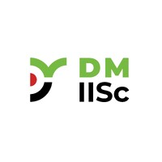

05 / Experience
Where systems
meet reality.
A progression from lean manufacturing and process optimization into product development, data-driven maintenance and aircraft ground-support systems — with each role adding another layer to how I approach engineering problems.
MAY 2026 — PRESENT
01 / CURRENT ROLE
Design Engineer, Ground Support Equipment
Premier Aviation Services
- Design and develop aircraft GSE including baggage handling equipment, 10-ft and 20-ft cargo dollies, and specialized helicopter GSE.
- Develop 3D CAD models, assemblies and 2D engineering drawings considering functional requirements, interfaces, manufacturability and assembly constraints.
- Work on the NH90 helicopter false landing gear project, supporting mechanical design, design iterations and engineering documentation.
- Collaborate with engineering and manufacturing teams to resolve design issues and support transition from design to fabrication and validation.
JAN 2026 — MAR 2026
02 / OPERATIONS
Production Operations Engineer
LionCircuits Pvt Ltd
- Managed production planning and execution across PCB fabrication and assembly operations, balancing capacity, takt time and delivery requirements.
- Coordinated cross-functional teams to optimize material flow, resource utilization and production schedules.
- Developed production tracking and analysis to identify bottlenecks, WIP and process constraints.

OCT 2024 — APR 2025
03 / R&D
Mechanical Design Engineer Intern
Department of Design and Manufacturing, IISc
- Designed and validated precision electromechanical subassemblies against dimensional, structural and manufacturability requirements.
- Developed 3D CAD models, 2D engineering drawings, assembly layouts and BOMs.
- Applied DFMEA, DFM/DFA and dimensional analysis to evaluate failure modes, manufacturability and functional performance.
2023
04 / INDUSTRY INTERNSHIP
Engineering Intern
Toyota Kirloskar Motor
- Worked on a Jishuken improvement project for the A400 Small Parts Preparation & Supply Operation, focusing on material flow and non-value-added activities.
- Mapped the end-to-end supply process using Value Stream Mapping and analyzed handling points, waiting and workload distribution.
- Evaluated countermeasures including route optimization, automation and workload balancing to improve the AGV-based supply loop.
- Reported a 30% reduction in waiting time and 25% improvement in overall process efficiency through the proposed improvements.